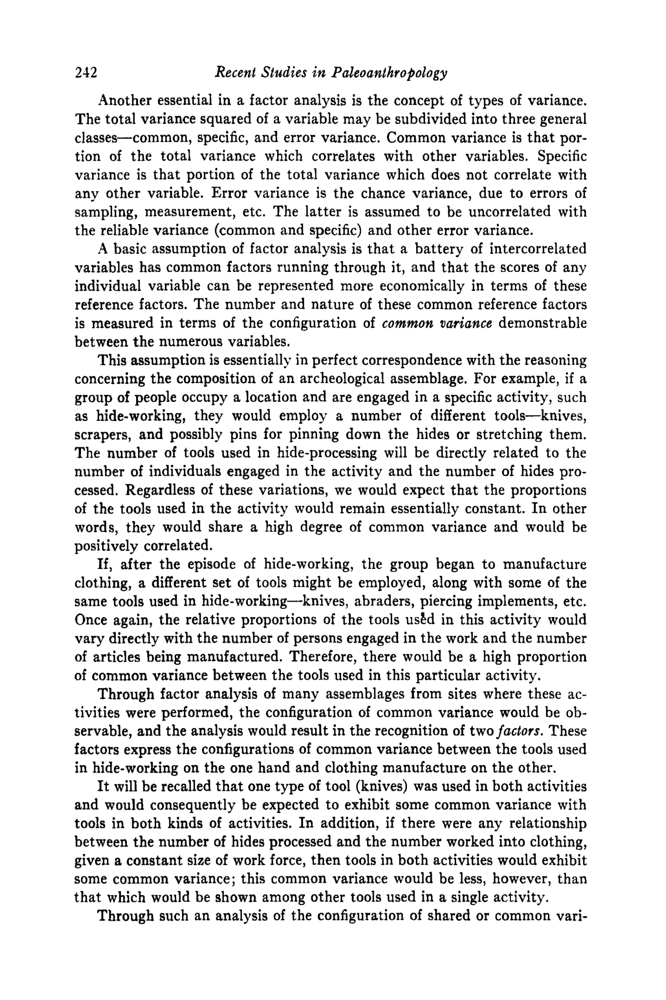

212 zyxwvutsrqponmlkjihgfedcbaZYXWVUTSRQPONMLKJIHGFEDCBA
Recent Studies zyxwvutsrqponmlkjihgfedcbaZYXWVUTSRQPONMLKJIHGFEDCBA
in
Paleoanthropology
Another essential in
a
factor analysis is the concept of types of variance.
The total variance squared of a variable may be subdivided into three general
classes-common, specific, and error variance. Common variance is that por-
tion of the total variance which correlates with other variables. Specific
variance is that portion of the total variance which does not correlate with
any other variable. Error variance is the chance variance, due to errors of
sampling, measurement, etc. The latter is assumed to be uncorrelated with
the reliable variance (common and specific) and other error variance.
A
basic assumption of factor analysis is that a battery of intercorrelated
variables has common factors running through it, and that the scores of any
individual variable can be represented more economically in terms of these
reference factors. The number and nature of these common reference factors
is measured in terms of the configuration of
zyxwvutsrqponmlkjihgfedcbaZYXWVUTSRQPONMLKJIHGFEDCBA
common
variance demonstrable
between the numerous variables.
This assumption is essentially in perfect correspondence with the reasoning
concerning the composition of an archeological assemblage. For example, if a
group
of
people occupy a location and are engaged in a specific activity, such
as hide-working, they would employ a number of different tools-knives,
scrapers, and possibly pins for pinning down the hides or stretching them.
The number
of
tools used in hide-processing will be directly related to the
number of individuals engaged in the activity and the number of hides pro-
cessed, Regardless of these variations, we would expect that the proportions
of the tools used in the activity would remain essentially constant. In other
words, they would share a high degree
of
common variance and would be
positively correlated.
If,
after the episode of hide-working, the group began to manufacture
clothing, a different set of tools might be employed, along with some of the
same tools used in hide-working-knives, abraders, piercing implements, etc.
Once again, the relative proportions of the tools used in this activity would
vary directly with the number
of
persons engaged in the work and the number
of articles being manufactured. Therefore, there would be
a
high proportion
of common variance between the tools used in this particular activity.
Through factor analysis of many assemblages from sites where these ac-
tivities were performed, the configuration of common variance would be
ob-
servable, and the analysis would result in the recognition
of
twofactors. These
factors express the configurations of common variance between the tools used
in hide-working on the one hand and clothing manufacture on the other.
It
will be recalled that one type of tool (knives) was used in both activities
and would consequently be expected to exhibit some common variance with
tools in both kinds
of
activities. In addition, if there were any relationship
between the number
of
hides processed and the number worked into clothing,
given
a
constant size of work force, then tools in both activities would exhibit
some common variance; this common variance would be less, however, than
that which would be shown among other tools used in
a
single activity.
Through such an analysis of the configuration of shared or common vari-
Thank you for your feedback!
Is there anything we can do to improve the Enhanced PDF?